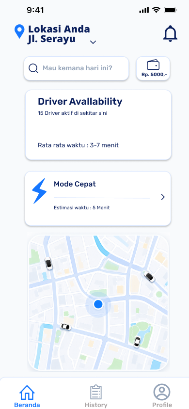
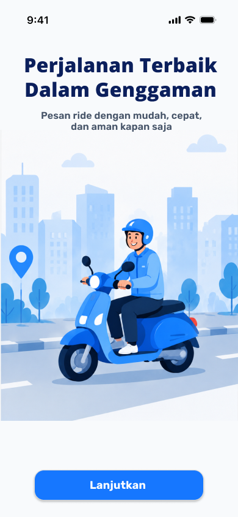
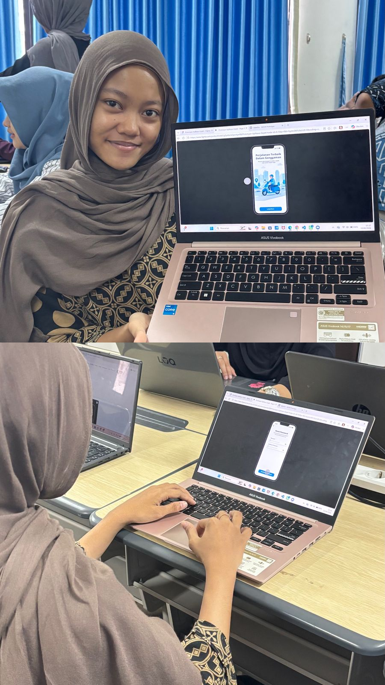

Metodologi Riset
Observasi alur aplikasi transportasi online, mulai dari login, memilih tujuan, menentukan titik jemput, sampai pesanan selesai.
Aplikasi transportasi online yang cepat, aman, dan mudah digunakan.
JalanGo dirancang untuk membantu pengguna memesan kendaraan, memilih titik jemput, melihat informasi driver, melakukan pembayaran, hingga menyelesaikan perjalanan dalam satu alur aplikasi yang sederhana.


Desain JalanGo dibuat sebagai rancangan aplikasi transportasi online yang membantu pengguna memesan kendaraan secara cepat. Setiap halaman menggunakan warna biru sebagai identitas utama, tampilan kartu yang rapi, dan alur navigasi sederhana agar pengguna mudah memahami proses pemesanan.
Untuk memahami kebutuhan dan kendala pengguna, saya melakukan pengamatan terhadap alur penggunaan aplikasi transportasi online, mulai dari pencarian tujuan, titik jemput, informasi driver, hingga proses perjalanan selesai.

Observasi alur aplikasi transportasi online, mulai dari login, memilih tujuan, menentukan titik jemput, sampai pesanan selesai.
Menyesuaikan fitur JalanGo seperti mode cepat, informasi driver, chat driver, telepon driver, dan metode pembayaran.
Pengguna membutuhkan alur pemesanan yang mudah, informasi driver yang jelas, dan tampilan aplikasi yang sederhana.
Berdasarkan hasil empathize, saya mendefinisikan masalah utama pengguna dan menentukan peluang solusi untuk aplikasi JalanGo.
Pengguna membutuhkan aplikasi transportasi online yang memiliki alur pemesanan sederhana, informasi driver yang jelas, titik jemput yang mudah ditentukan, serta fitur komunikasi agar perjalanan terasa lebih aman dan nyaman.
1. Bagaimana membuat alur pemesanan kendaraan menjadi lebih cepat dan mudah dipahami?
2. Bagaimana membantu pengguna melihat informasi driver, estimasi waktu, dan titik jemput dengan jelas?
3. Bagaimana menyediakan fitur komunikasi agar pengguna bisa menghubungi driver sebelum perjalanan dimulai?
Saya memprioritaskan fitur yang paling membantu pengguna dalam proses pemesanan transportasi.
Top Priorities:
Pada tahap ini saya mengembangkan ide solusi untuk aplikasi JalanGo melalui brainstorming, sketsa awal, dan penyusunan tampilan low-fidelity.
Prototype JalanGo dibuat di Figma dan sudah disusun menjadi alur interaktif, mulai dari halaman awal, login, beranda, pemesanan, pencarian driver, komunikasi dengan driver, hingga perjalanan selesai.
Preview ini menampilkan prototype JalanGo secara langsung dari Figma. Gunakan tombol di bawah untuk membuka project secara penuh.
Pada tahap ini, saya melakukan pengujian sederhana untuk mengetahui apakah alur aplikasi JalanGo mudah dipahami dan nyaman digunakan oleh pengguna.

Mahasiswa, 19 Tahun
"Aplikasinya mudah dipahami dan alur pemesanannya cukup jelas."| Task | Status | Catatan |
|---|---|---|
| Membuka App & Beranda | Berhasil | Mudah dipahami |
| Input Tujuan | Berhasil | Alur jelas |
| Memilih Titik Jemput | Berhasil | Lokasi mudah dipilih |
| Mencari Driver | Berhasil | Status driver terlihat |
| Menyelesaikan Pesanan | Berhasil | Proses selesai jelas |